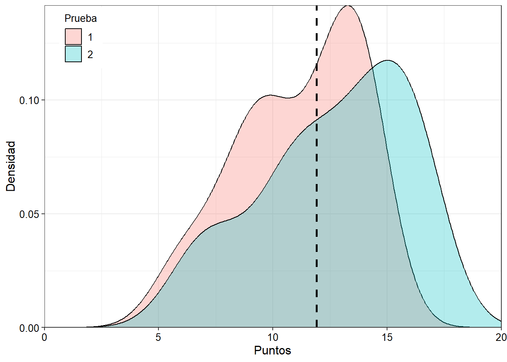
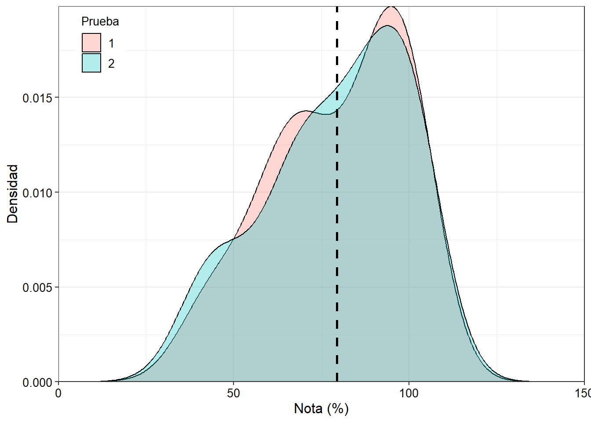
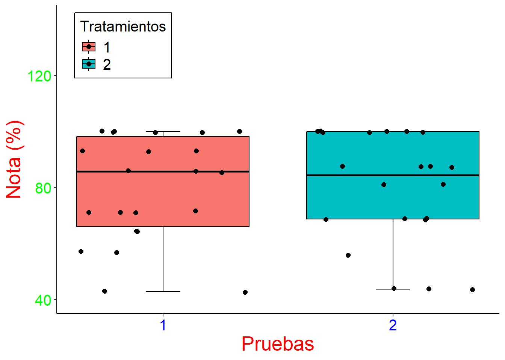

ver código
library(tidyverse)
library(dplyr)
library(ggplot2)Richard Pardes-Espinosa
Para el análisis se utilizó las librerías tidyverse y ggplot2. Estas librerías permiten manipular con facilidad la información y la obtención de gráficos de excelente calidad.
La data fue previamente elaborada por el PhD. Emerson del Ponte, professor de de Fitopatología de la UFV. Los datos corresponden a las calificaciones obtenidas en dos exámenes, realizadas a estudiantes de posgrado que cursan la disciplina FIP 606. La tabla se caracteriza por presentar una columna que corresponde al factor (prova) con sus prespectivos niveles (sabatina 1 y 2) y dos columnas que pertenecen a las variables pontos y nota.
df <- tibble::tribble(
~prova, ~pontos, ~nota,
1L, 10L, 71.4,
1L, 13L, 92.9,
1L, 12L, 85.7,
1L, 6L, 42.9,
1L, 14L, 100,
1L, 12L, 85.7,
1L, 14L, 100,
1L, 8L, 57.1,
1L, 14L, 100,
1L, 10L, 71.4,
1L, 10L, 71.4,
1L, 13L, 92.9,
1L, 9L, 64.3,
1L, 14L, 100,
1L, 9L, 64.3,
1L, 14L, 100,
1L, 12L, 85.7,
1L, 14L, 100,
1L, 8L, 57.1,
1L, 6L, 42.9,
1L, 10L, 71.4,
1L, 13L, 92.9,
2L, 13L, 81.25,
2L, 11L, 68.75,
2L, 14L, 87.5,
2L, 14L, 87.5,
2L, 14L, 87.5,
2L, 16L, 100,
2L, 16L, 100,
2L, 16L, 100,
2L, 16L, 100,
2L, 7L, 43.75,
2L, 11L, 68.75,
2L, 13L, 81.25,
2L, 14L, 87.5,
2L, 16L, 100,
2L, 11L, 68.75,
2L, 7L, 43.75,
2L, 16L, 100,
2L, 9L, 56.25,
2L, 7L, 43.75,
2L, 11L, 68.75,
2L, 11L, 68.75,
2L, 16L, 100
)La columna “prova” corresponde a los exámenes impartidos en dos momentos, motivo por el cual se definirá como factor con dos niveles. Además, esta columna contiene al número de casos evaluados.
Las variables evaluadas fueron sometidos la evaluación de los ED. En general, el promedio obtenido para la variable pontos fue de 11.91 ± 2.99, observandose 6 pontos como mínimos (Min) y 16 pontos como el valor más alto (Max).
Para facilitar la contrucción y calculos de los ED, nos apoyamos de las librerías flextable y moments.
library(flextable)
library(moments)
df |>
summarise(n = sum(!is.na(pontos)),
Promedio = mean(pontos),
Sd = sd(pontos),
Asimetria = skewness(pontos),
Kurtosis = kurtosis(pontos),
Mínimo = min(pontos),
Mediana = median(pontos),
Máximo = max(pontos)) |>
flextable() %>%
colformat_double(digits = 2) |>
fontsize(size = 12, part = "all") |>
autofit() %>%
set_caption("Estadísticos descriptivos para la variable pontos")n | Promedio | Sd | Asimetria | Kurtosis | Mínimo | Mediana | Máximo |
|---|---|---|---|---|---|---|---|
44 | 11.91 | 2.99 | -0.37 | 2.12 | 6 | 12.50 | 16 |
En cuanto a la variable notas, el promedio general fue de fue de 79.40 con una desviación (±) de 19.13. Los valores mínimos (Min) y máximos (Max) fluctuaron entre 42.90 a 100.
df |>
summarise(n = sum(!is.na(nota)),
Promedio = mean(nota),
Sd = sd(nota),
Asimetria = skewness(nota),
Kurtosis = kurtosis(nota),
Mínimo = min(nota),
Mediana = median(nota),
Máximo = max(nota)) |>
flextable() %>%
colformat_double(digits = 2) |>
fontsize(size = 12, part = "all") |>
autofit() %>%
set_caption("Estadísticos descriptivos para la variable nota")n | Promedio | Sd | Asimetria | Kurtosis | Mínimo | Mediana | Máximo |
|---|---|---|---|---|---|---|---|
44 | 79.40 | 19.13 | -0.53 | 2.10 | 42.90 | 85.70 | 100.00 |
En cuanto a la asimetría, para las dos variables se registro una tendencia negativa en la campana de Gauss, siendo para la variable pontos y nota de -0.37 y -0.53.
Se realizó un gráfico de densidad para verificar los supuestos de normalidad.
df |>
ggplot(aes(x = pontos,
fill = factor(prova))) +
geom_density(alpha = 0.3) +
geom_vline(aes(xintercept = mean(pontos)),
color = "black",
linetype = "dashed",
linewidth = 1) +
theme_bw() +
labs(x = "Puntos",
y = "Densidad",
fill = "Prueba") +
scale_x_continuous(expand = c(0,0),
limits = c(0,20)) +
scale_y_continuous(expand = c(0,0)) +
theme(axis.title = element_text(size = 12, color = "black")) +
theme(axis.text.x = element_text(size = 10, color = "black")) +
theme(axis.text.y = element_text(size = 10, color = "black")) +
theme(legend.position = c(0.08, 0.9),
legend.background = element_rect(color = NULL),
legend.text = element_text(size = 10),
legend.title = element_text(size = 10, face = NULL))
En la Figura 1, se presenta la distribución de las calificaciones obtenidas por los estudiantes del posgrado de Fitopatología, UFV. Se observa que el examen 1 y 2 presentan una distribución ligeramente simétrica, con picos ligaramente pronunciados que sobresalen hacia la izquierda del punto de tendencia central.
La Figura proporciona información sobre los casos, que parece seguir una distribución no paramétrica. La distribución podría deberse a la naturaleza categórica de los datos. Tal vez, una transformación a la raíz(x) podría ayudar a normalizar la distribución de los datos para luego realizar la prueba de t-student con la finalidad de determinar el rendimiento de los alumnos a través del tiempo.
Cabe destacar que, el rendimiento en el segundo examen fue más uniforme en comparación con la primera. En términos de aprendizaje, podría hipotetizar que los alumnos de la UFV han mejorado su aprendizaje para la segunda prueba; ya que, al parece la primera prueba parece agrupar a los alumnos en dos clases, uno con notas altas y otra con notas bajas, respectivamente.
# Para la variable nota
df |>
ggplot(aes(x = nota, fill = factor(prova))) +
geom_density(alpha = 0.3) +
geom_vline(aes(xintercept = mean(nota)),
color = "black", linetype = "dashed", linewidth = 1) +
theme_bw() +
labs(x = "Nota (%)",
y = "Densidad",
fill = "Prueba") +
scale_x_continuous(expand = c(0,0),
limits = c(0,150)) +
scale_y_continuous(expand = c(0,0)) +
theme(axis.title = element_text(size = 12, color = "black")) +
theme(axis.text.x = element_text(size = 10, color = "black")) +
theme(axis.text.y = element_text(size = 10, color = "black")) +
theme(legend.position = c(0.08, 0.9),
legend.background = element_rect(color = NULL),
legend.text = element_text(size = 10),
legend.title = element_text(size = 10, face = NULL))
Interesantemente, cuando se grafica con la variable “nota”, las curva de densidad de la Figura 2 se supersonen en comparación con las curvas de densidad de la Figura 1. Esta observación se debe a que en la Figura 2, las pruebas fueron evaluadas a la misma escala de puntuación, es decir, para la variable “pontos” y “notas” el rango de observaciones varian de 0 a 14 o 16 y de 0 a 100, respectivamente.
Es esperado las similitudes entre la Figura 1 y 2. Sin embargo, en la Figura 2, se observa que las diferencias se acentuan más entre los casos observados, formando grupos dentro de cada examen.
A continuación, se realizará una prueba se evaluará la normalidad de la distribución de los datos observados bajo un nivel de significancia de p-value de 0.05 (p>0.05).
Shapiro-Wilk normality test
data: pontos
W = 0.93263, p-value = 0.01291
Shapiro-Wilk normality test
data: nota
W = 0.87972, p-value = 0.0002742Según la prueba de Shapiro-Wilk para evaluar la normalidad de los datos, para la variable “pontos” y “nota” se obtuvo un p-value de 0.01291 y 0.0002742, respectivamente. La prueba reafirma lo observado en la Figura 1 y 2.
Posteriormente, se realizó una figura boxplot sólo con la variable nota, ya que esta variable esta cuantificada en un valor porcentual a los puntajes obtenidos por cada estudiante, es decir, el rango de evaluación para todos los casos se encuentra en la misma escala porcentual (%). A continuación se muestra la Figura.
df |>
ggplot(aes(prova, nota, fill = factor(prova))) +
stat_boxplot(geom = "errorbar",
width = 0.15) +
geom_boxplot(outlier.shape = NA,
color = "black",
size = 0.5) +
geom_jitter(color = "black",
size = 2) +
theme_classic() +
labs(x = "Pruebas",
y = "Nota (%)",
fill = "Tratamientos") +
scale_x_continuous(breaks = c(1,2)) +
scale_y_continuous(limits = c(40,140),
breaks = c(40,80,120)) +
theme(axis.title = element_text(size = 20, color = "red")) +
theme(axis.text.x = element_text(size = 15, color = "blue")) +
theme(axis.text.y = element_text(size = 15, color = "green")) +
theme(legend.position = c(0.15, 0.87),
legend.background = element_rect(color = "black"),
legend.text = element_text(size = 15),
legend.title = element_text(size = 15))
De la Figura 3, observamos similaridad entre las observaciones de los casos para la prueba 1 y 2. Problablemente, no exista diferencias significativas entre los tratamientos evaluados.